📑 Dans cette page (8 sections)
🎯 Rôle
La base stocke les textes (articles, métadonnées, liste des médias). Les fichiers médias sont ailleurs (page 7).
Sans DATABASE_URL, le site utilise SQLite locale (développement). En production, utilise PostgreSQL : sur Render gratuit, un fichier SQLite serait effacé à chaque redéploiement.
🆕 Créer la base gratuite sur Supabase
- supabase.com → New project : nom, mot de passe de base (note-le ; évite
@ : / ? # %ou encode-les), région proche de Render. - Attends la fin de la création.
🧭 Choisir la bonne adresse (bouton Connect)
💡 Astuce
Choisis toujours Session pooler (port 5432) : il passe en IPv4 et fonctionne avec Render.
%%{init: {"theme":"base","themeVariables":{"primaryColor":"#0f2130","primaryTextColor":"#e6eef5","primaryBorderColor":"#5fd0ff","lineColor":"#3d89ab","secondaryColor":"#1a0d14","tertiaryColor":"#0b1824","edgeLabelBackground":"#0f2130","fontFamily":"ui-monospace, Menlo, Consolas, monospace","noteBkgColor":"#1a0d14","noteTextColor":"#ffb4bb","actorBkg":"#0f2130","actorBorder":"#5fd0ff","actorTextColor":"#e6eef5","signalColor":"#3d89ab","signalTextColor":"#3d89ab","labelBoxBkgColor":"#0f2130","labelTextColor":"#e6eef5","loopTextColor":"#3d89ab"}}}%%
flowchart TD
Q{"Quelle adresse Supabase ?"}
Q --> A["🔌 Direct connection<br/>IPv6"] --> A1(["❌ Souvent injoignable depuis Render"])
Q --> B["♻️ Session pooler<br/>port 5432"] --> B1(["✅ À utiliser"])
Q --> C["⚡ Transaction pooler<br/>port 6543"] --> C1(["⚠️ À éviter ici"])
class B1 ok
class A1 bad
classDef cloud fill:#0f2130,stroke:#5fd0ff,color:#e6eef5
classDef ok fill:#0c241b,stroke:#5dffb0,color:#e6eef5
classDef bad fill:#241219,stroke:#ff4d5e,color:#ffb4bb
| Mode | Verdict |
|---|---|
| Direct connection | ❌ souvent IPv6 seulement sur l'offre gratuite, inaccessible depuis Render |
| Session pooler (port 5432) | ✅ à utiliser (IPv4) |
| Transaction pooler (port 6543) | ⚠️ à éviter avec ce site |
Forme :
postgresql://postgres.<ref>:<MOT_DE_PASSE>@aws-0-<region>.pooler.supabase.com:5432/postgres
Remplace [YOUR-PASSWORD] par le mot de passe sans crochets. Le site convertit lui-même le préfixe pour le pilote psycopg.
Caractères spéciaux à encoder : @ → %40, # → %23, / → %2F, : → %3A.
🔌 Brancher le site
- Render → Environment →
DATABASE_URL=<adresse>. - Au démarrage, les tables
postsetmediasont créées si absentes, et 3 articles de démonstration sont ajoutés sipostsest vide. - Contrôle dans Supabase → Table Editor.
🗺️ Schéma
%%{init: {"theme":"base","themeVariables":{"primaryColor":"#0f2130","primaryTextColor":"#e6eef5","primaryBorderColor":"#5fd0ff","lineColor":"#3d89ab","secondaryColor":"#1a0d14","tertiaryColor":"#0b1824","edgeLabelBackground":"#0f2130","fontFamily":"ui-monospace, Menlo, Consolas, monospace","noteBkgColor":"#1a0d14","noteTextColor":"#ffb4bb","actorBkg":"#0f2130","actorBorder":"#5fd0ff","actorTextColor":"#e6eef5","signalColor":"#3d89ab","signalTextColor":"#3d89ab","labelBoxBkgColor":"#0f2130","labelTextColor":"#e6eef5","loopTextColor":"#3d89ab"}}}%%
erDiagram
POSTS {
int id PK
string slug UK
string title
string section
text excerpt
text content
string cover
string tags
bool published
bool pinned
string author
datetime created_at
datetime updated_at
datetime published_at
}
MEDIA {
int id PK
string key UK
string url
string kind
string mime
string name
int size
string uploaded_by
datetime created_at
}
POSTS }o..o{ MEDIA : "référence par URL"
posts : id (PK), slug (unique, adresse /a/<slug>), title, section (clé : dossiers-scp…), excerpt, content (Markdown + shortcodes), cover (URL), tags (format ,tag1,tag2,), published, pinned, author, created_at, updated_at, published_at (UTC).
media : id, key (unique), url, kind (image/video), mime, name, size, uploaded_by, created_at.
✅ Limites de l'offre gratuite (à vérifier sur Supabase)
⚠️ Attention
Un projet Supabase gratuit inactif peut être mis en pause : le site renverra des erreurs tant qu'il n'est pas relancé depuis le tableau de bord.
- Un projet inactif peut être mis en pause : le site renvoie des erreurs 500 tant qu'il n'est pas relancé depuis le tableau de bord.
- Stockage et connexions limités ; le site garde un petit pool (3 + 2 connexions par worker). Garde
--workers 1ou 2.
💾 Sauvegarde manuelle
Avec les outils PostgreSQL installés :
pg_dump "postgresql://postgres.<ref>:<MDP>@aws-0-<region>.pooler.supabase.com:5432/postgres" -f sauvegarde.sql
Restauration : psql "<adresse>" -f sauvegarde.sql. Ne commit jamais ces fichiers. Vérifie dans ton tableau de bord quelles sauvegardes automatiques incluent ton offre.
🩺 Dépannage
| Symptôme | Piste |
|---|---|
could not translate host name / timeout |
Mauvaise adresse ou mode Direct (IPv6) → Session pooler |
password authentication failed |
Mot de passe faux ou mal encodé → le réinitialiser dans Supabase (Settings → Database) |
too many connections / MaxClients… |
Réduire --workers |
| Erreurs après des jours sans visite | Projet en pause → le relancer |
| Tables absentes | Le site n'a pas démarré : lire les Logs Render |


◀ 🚀 Déploiement Render · 🎞️ Médias et stockage ▶

⛨ SCP Foundation — projet de fan non officiel · contenus SCP sous licence CC BY-SA 3.0 lorsque applicable · ⬆ retour en haut